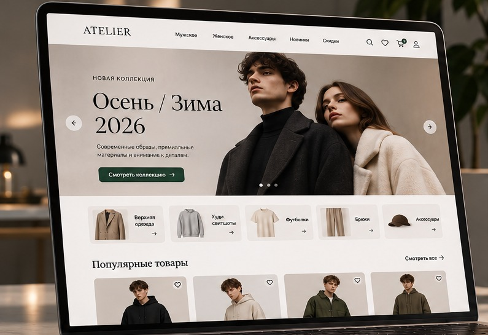
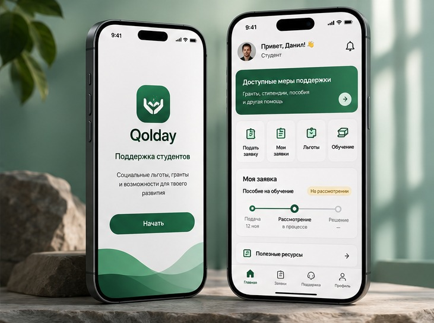
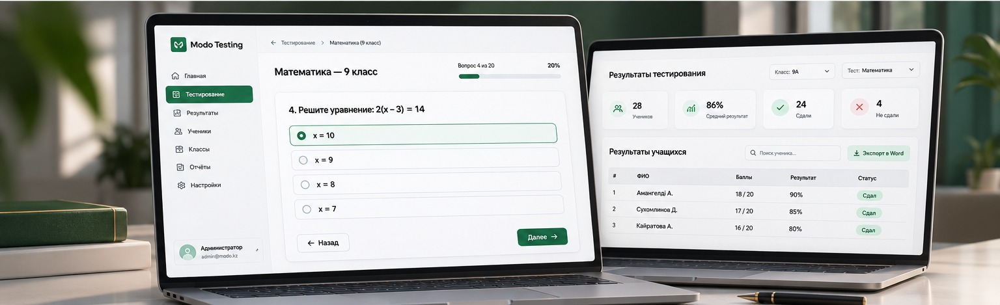

↗01 / E-COMMERCEВеб-сайт с каталогом товаров и отдельными страницами интерфейса. В репозитории — HTML, CSS и материалы проекта.
Привет, я Данил — разработчик
Создаю сайты и веб-приложения — продумываю интерфейс, собираю логику и работаю с данными. От первой идеи до работающего результата.
Небольшая подборка учебных и самостоятельных работ. Каждый проект — возможность попробовать новую идею и прокачать навыки.

↗01 / E-COMMERCEВеб-сайт с каталогом товаров и отдельными страницами интерфейса. В репозитории — HTML, CSS и материалы проекта.

↗02 / MOBILE CONCEPTИдея цифровой платформы поддержки студентов. В открытом репозитории доступны README и материалы проекта.

↗03 / EDUCATION PLATFORMВеб-платформа для прохождения тестов и просмотра результатов. Проект включает пользовательскую часть и административные сценарии.
Изображения проектов — визуальные концепции интерфейсов, подготовленные для презентации портфолио; они не являются скриншотами работающих продуктов.
Я Данил — студент IT-специальности и начинающий разработчик. Развиваюсь в веб- и мобильной разработке, создаю учебные и личные проекты.
Мне интересны интерфейсы, серверная логика, базы данных и интеграции. Люблю самостоятельно изучать документацию, разбираться в ошибках и доводить задачи до понятного результата.
Обсудим вашу задачу и подберём реалистичный формат реализации. Беру проекты, соответствующие моему текущему уровню и возможностям.
Лендинги, сайты-визитки, страницы услуг и небольшие каталоги.
Формы, личные кабинеты и небольшие системы с базой данных.
Первые версии цифровых продуктов для проверки идеи.
Стоимость и сроки обсуждаются после уточнения требований и объёма работы.
Технологии, с которыми знаком по обучению и самостоятельной практике.
Расскажите, что хотите создать. Я отвечу, уточню детали и предложу следующий шаг.
Написать на почту